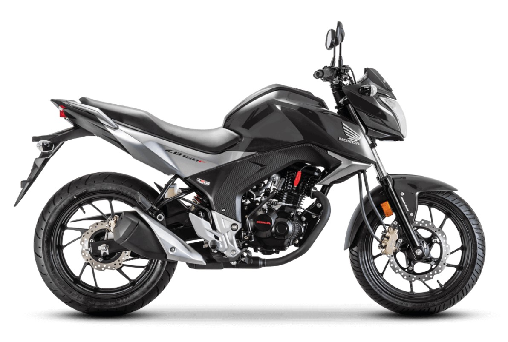

Honda CB 160 vale a pena?

Honda CB 160 vale a pena em 2026?
A Honda CB 160 é uma das motos mais procuradas por quem deseja um modelo econômico, confiável e com visual esportivo. Muitas pessoas pesquisam se a Honda CB 160 vale a pena antes de decidir pela compra, especialmente quem procura uma moto para uso diário.
Esse modelo da Honda pertence à categoria das motos naked de baixa cilindrada. Ele se destaca pela posição de pilotagem confortável, manutenção simples e bom consumo de combustível. Essas características fazem com que a CB 160 seja bastante utilizada no dia a dia, tanto para deslocamentos urbanos quanto para pequenas viagens.
Além disso, a marca Honda possui grande presença no mercado brasileiro, o que facilita a manutenção e a reposição de peças. Isso também contribui para o bom valor de revenda da moto.
Preço da Honda CB 160
O preço da Honda CB 160 pode variar dependendo do ano e do estado de conservação da moto. No mercado brasileiro, uma unidade zero quilômetro pode custar aproximadamente entre R$ 18.000 e R$ 20.000.
Já no mercado de motos usadas ou seminovas, é possível encontrar modelos com valores entre R$ 12.000 e R$ 17.000. Esse preço relativamente acessível torna a CB 160 uma opção interessante para quem está comprando a primeira moto.
Outro fator positivo é que a Honda costuma manter boa valorização no mercado de usados, o que facilita uma futura revenda.
Consumo de combustível
O consumo de combustível é um dos pontos mais importantes para quem utiliza a moto todos os dias. Nesse aspecto, a Honda CB 160 apresenta um desempenho bastante satisfatório.
Em média, o modelo consegue fazer entre 35 km/l e 40 km/l, dependendo da forma de pilotagem e das condições da via. Isso significa que a moto consegue rodar muitos quilômetros com um custo relativamente baixo de combustível.
Essa economia torna a CB 160 uma ótima opção para quem utiliza a moto para trabalho ou transporte diário.
Ficha técnica da Honda CB 160
A Honda CB 160 possui um motor monocilíndrico de aproximadamente 160cc. Esse motor entrega cerca de 14 cavalos de potência, oferecendo desempenho adequado para uso urbano.
Algumas das principais características da moto incluem:
- Motor: 160cc
- Potência: cerca de 14 cv
- Câmbio: 5 marchas
- Freio dianteiro a disco
- Injeção eletrônica de combustível
Essas especificações mostram que a CB 160 é uma moto equilibrada dentro da sua categoria.
Prós e contras da Honda CB 160
Pontos positivos:
- Motor confiável e durável
- Boa economia de combustível
- Peças fáceis de encontrar
- Boa valorização no mercado de usados
Pontos negativos:
- Potência limitada para viagens longas
- Suspensão pode ser simples para alguns pilotos
- Equipamentos tecnológicos básicos
Conclusão: Honda CB 160 vale a pena?
De forma geral, a resposta é sim. A Honda CB 160 vale a pena principalmente para quem procura uma moto econômica, confiável e fácil de manter.
Embora não seja uma moto voltada para alta performance, ela cumpre muito bem a função de transporte diário. O baixo consumo de combustível e a manutenção simples fazem dela uma escolha bastante segura dentro da categoria.
Para quem busca uma moto prática, durável e com bom custo-benefício, a Honda CB 160 continua sendo uma opção interessante no mercado brasileiro.